Trop vite en endurance fondamentale
L’allure fondamentale n’est pas respectée : la séance censée construire l’endurance devient une séance moyenne, qui fatigue sans faire progresser.
- - prévu— réaliséschéma illustratif
Profilage physiologique en course à pied ou à vélo sur home trainer : vos seuils, vos zones d’intensité et votre stratégie d’allure, mesurés plutôt que devinés.
Le test mesure avec précision votre seuil de lactate 1 (SL1), votre seuil de lactate 2 (SL2) et votre état stable maximal (MLSS). Ces données définissent vos zones d’entraînement, votre nutrition et votre stratégie d’allure, que vous visiez un Ironman, un triathlon XXL ou simplement une progression régulière.
La méthode : mesurer la concentration de lactate dans le sang à différents niveaux d’effort, par une goutte de sang prélevée au doigt.
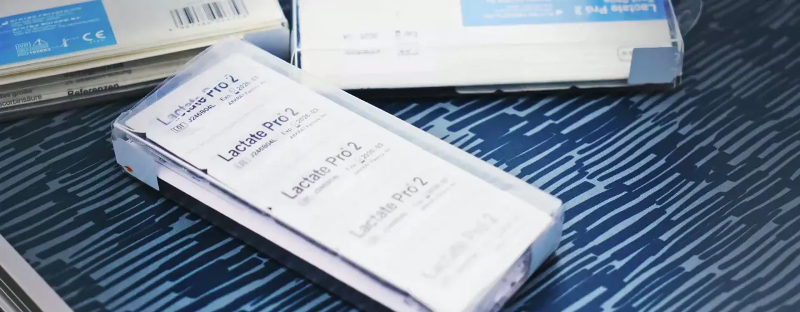
Beaucoup d’athlètes, surtout en début de coaching, s’entraînent trop longtemps ou trop intensément, sans récupération adéquate. Résultat : surmenage et stagnation.
L’allure fondamentale n’est pas respectée : la séance censée construire l’endurance devient une séance moyenne, qui fatigue sans faire progresser.
Des puissances trop proches d’une séance à l’autre : ni vraie récupération, ni vrai travail spécifique. L’efficacité et la performance plafonnent.
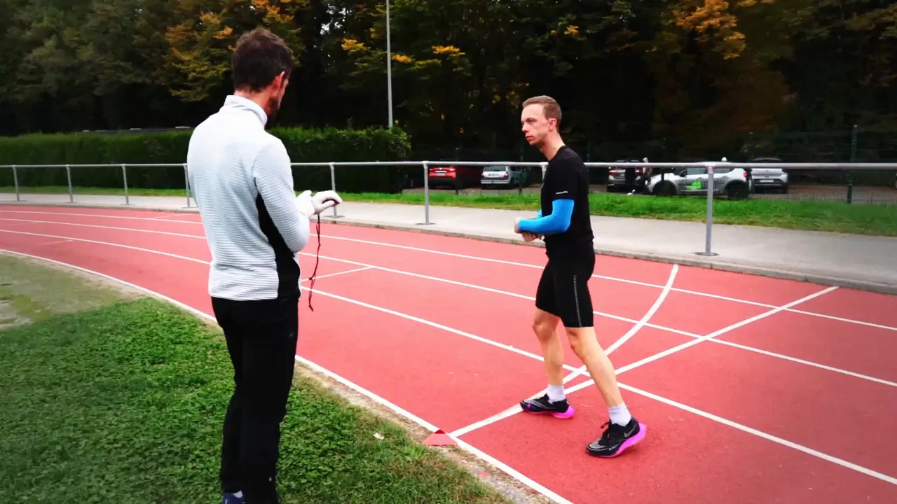
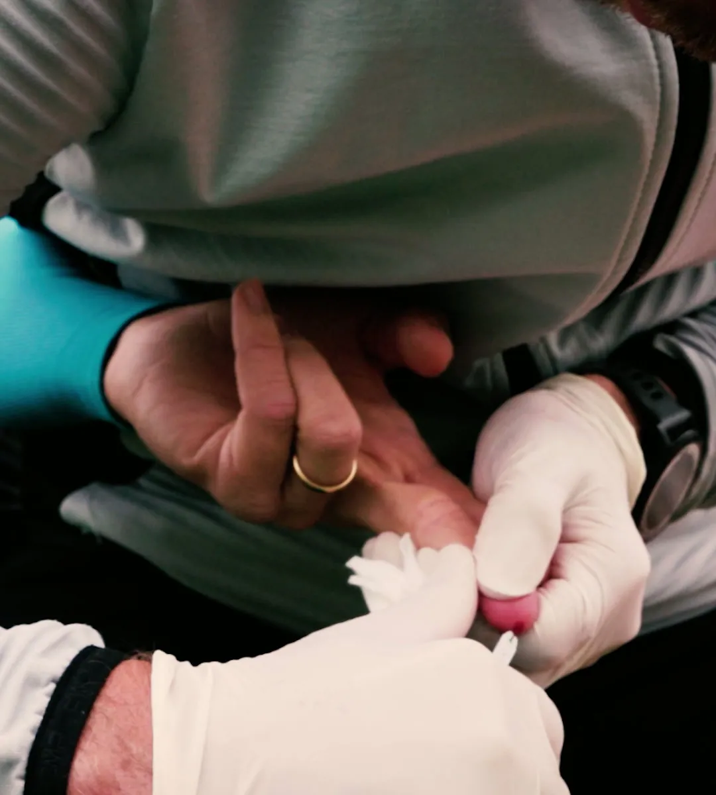
En triathlon, la clé de la performance n’est pas forcément une VO2max ou une VMA élevée, mais la capacité à maintenir des états stables maximaux de stabilité métabolique.Iannetta et al. (2020) · Jones et al. (2019)
Mon expérience à l’INSEP (tests sur des sportifs de haut niveau, élaboration d’un protocole de recherche) m’a permis de développer une expertise du profilage physiologique.
Les tests sont réalisés à vélo sur home trainer ou en course à pied, conçus pour refléter les conditions réelles de compétition. Ils définissent vos zones en puissance, en allure et en fréquence cardiaque.
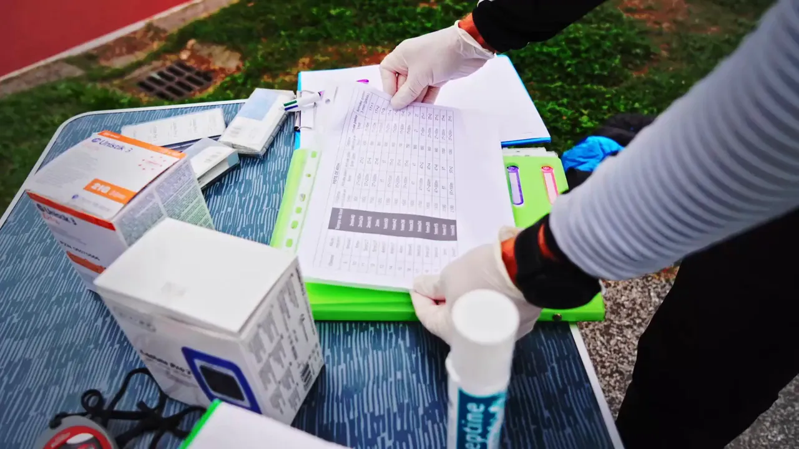
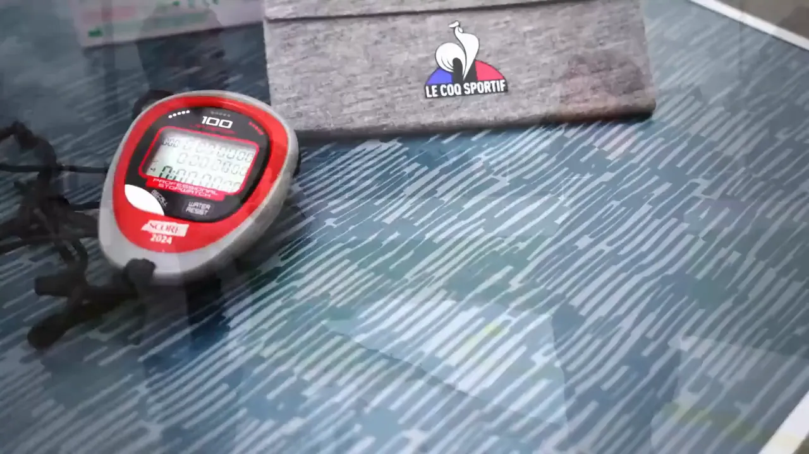

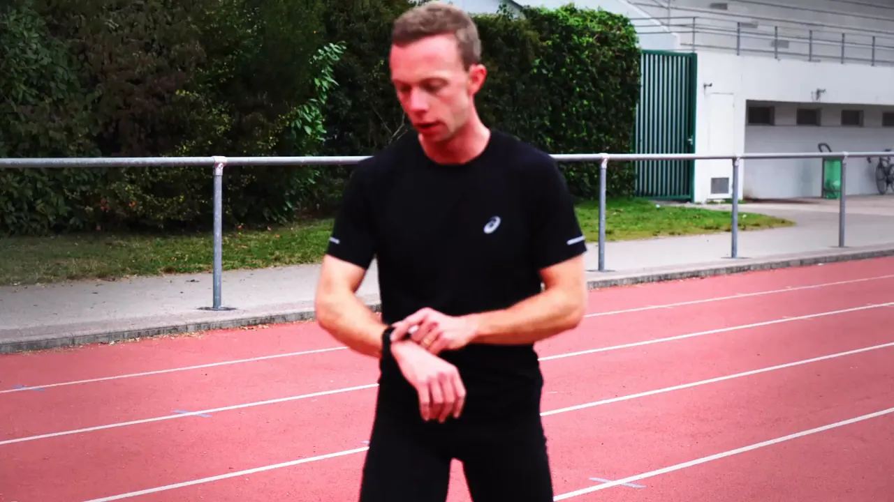
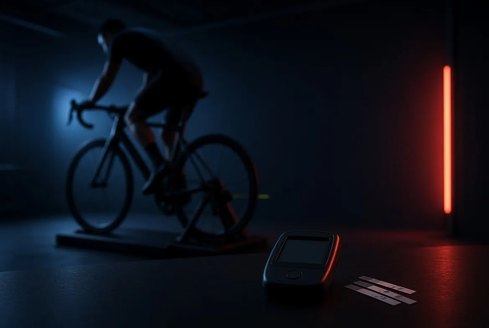
Les limites et proportions aérobies et anaérobies.
L’intensité maximale soutenable sans déséquilibre du lactate.
Les fréquences cardiaques de chaque seuil, pour un entraînement ciblé.
Votre fréquence cardiaque maximale mesurée.
Indicateur de performance, selon votre objectif.
Votre efficacité à maintenir une performance élevée dans la durée.
En puissance, en allure et en fréquence cardiaque.
Chaque donnée expliquée et reliée à vos objectifs.
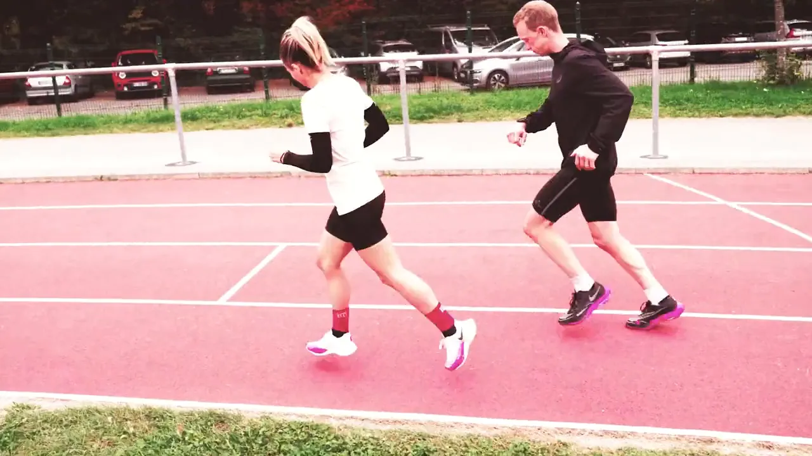
Vous me communiquez votre objectif : endurance, vitesse, Ironman, XXL ou autre.
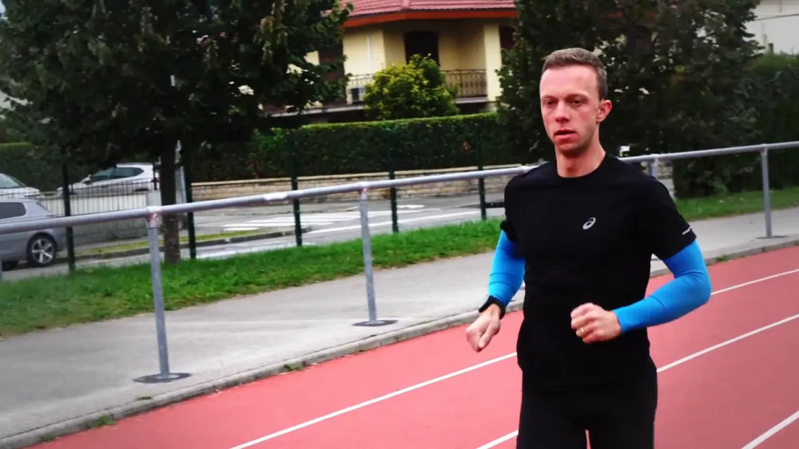
J’identifie les facteurs dont dépend votre objectif : puissance, vitesse, endurance.
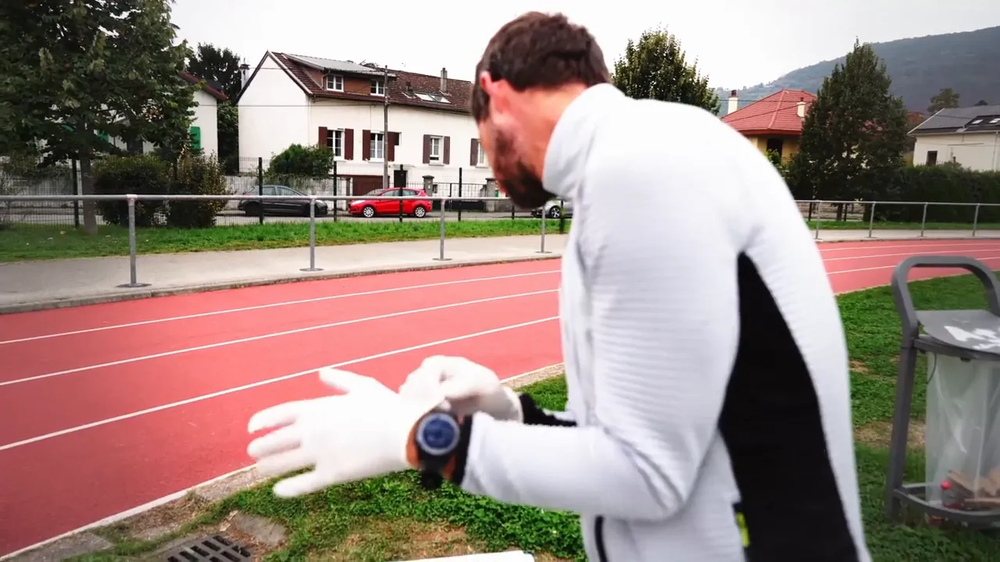
Test d’effort lactate en course ou à vélo, notamment sur home trainer.
Seuils de lactate, fréquence cardiaque maximale, PMA ou VMA, index d’endurance.
Un débriefing complet : comment chaque donnée se rapporte à vos objectifs.
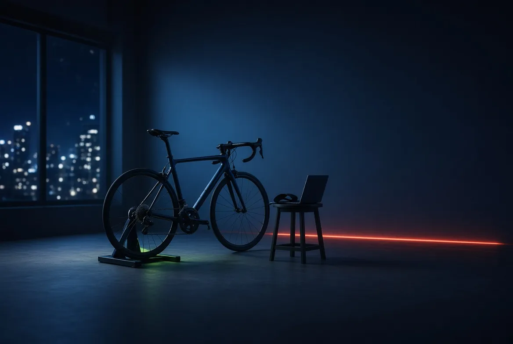
Un plan détaillé et des stratégies pour chaque séance, avec ou sans coaching accompagné.
Un test complet, avec analyse et débriefing.
Les deux tests, pour des zones précises dans les deux disciplines.
Si le ou les tests sont pris avec le Starter Pack du coaching. conditions à préciser
Lieu du test. Sur piste d’athlétisme pour la course, sur home trainer pour le vélo. Adresse : à compléter
Avant le test. Un formulaire de consentement est à remplir. Il s’agit d’un profilage de la performance, pas d’un examen médical : un certificat de non contre-indication à la pratique sportive pourra être demandé à confirmer
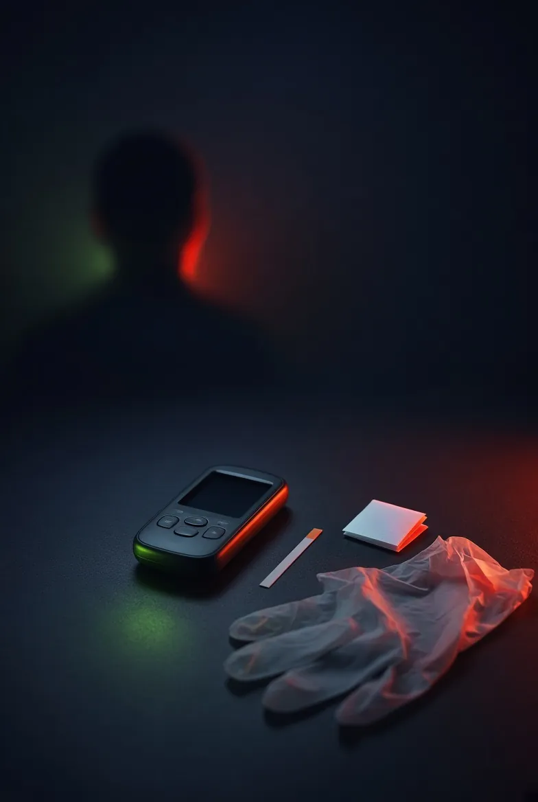
Réservez un premier échange : nous choisirons ensemble le test adapté à votre objectif, avec ou sans coaching.